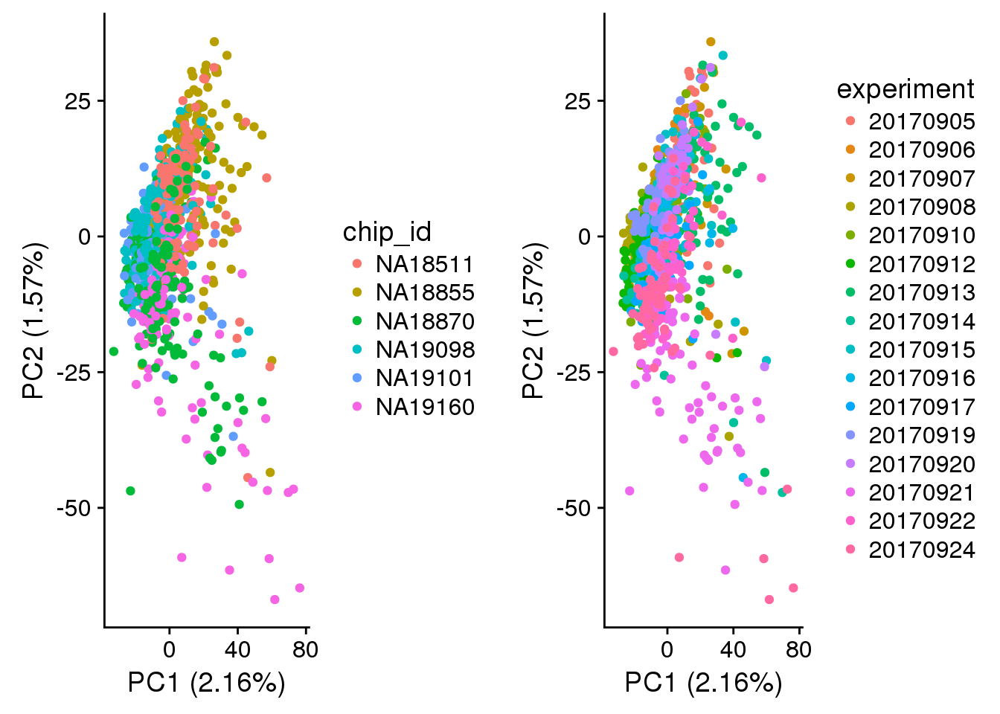

Last updated: 2018-04-09
Code version: d64c402
I performed gene filtering based on the criterion set forth in our previous paper.
Results:Found 1,150 genes previously quantified in MitoCarta inventory.
Output: gene annotation saved in ../output/gene-filtering.Rmd/mito-genes-info.csv
\(~\)
Results There’s one, and turns out this over-expressed gene is one of the mitochrondrial genes.
Output: gene annotation saved in ../output/gene-filtering.Rmd/over-expressed-genes-info.csv
\(~\)
Results: * Of 20,421 genes, 7,628 genes are classifed as lowly-expressed. Of these, 34 are ERCC control genes and 7,594 are endogenoeus genes.
Output: gene annotation saved in ../output/gene-filtering.Rmd/lowly-expressed-genes-info.csv
Finally, filtered eset (eset_filtered) and cpm normalized count (cpm_filtered) are saved in ../output/gene-filtering.Rmd/eset-filterd.rdata.
\(~\)
Combine eSet objects.
library(knitr)
library(Biobase)
library(dplyr)
#library(gdata)
library(heatmap3)
library(testit)
library(cowplot)
library(biomaRt)
library(knitr)
library(data.table)
source("../code/pca.R")
eset <- readRDS("../data/eset-raw.rds")Filter out low-quality single cell samples.
pdata_filter <- pData(eset)[pData(eset)$filter_all == TRUE,]
count_filter <- exprs(eset[,pData(eset)$filter_all == TRUE])
dim(count_filter)[1] 20421 1025\(~\)
Found 1,150 genes previously quantified in MitoCarta inventory.
human_mito <- gdata::read.xls("../data/Human.MitoCarta2.0.xls",
sheet = 2, header = TRUE, stringsAsFactors=FALSE)
human_mito_ensembl <- human_mito$EnsemblGeneID
which_mito <- which(rownames(count_filter) %in% human_mito_ensembl)
which_mito_genes <- rownames(count_filter)[which_mito]
length(which_mito)[1] 1150Get mito gene info via biomaRt.
# do biomart to verfiy these genes
ensembl <- useMart(host = "grch37.ensembl.org",
biomart = "ENSEMBL_MART_ENSEMBL",
dataset = "hsapiens_gene_ensembl")
mito_genes_info <- getBM(
attributes = c("ensembl_gene_id", "chromosome_name",
"external_gene_name", "transcript_count",
"description"),
filters = "ensembl_gene_id",
values = which_mito_genes[grep("ENSG", which_mito_genes)],
mart = ensembl)
fwrite(mito_genes_info,
file = "../output/gene-filtering.Rmd/mito-genes-info.csv")\(~\)
There’s one, and turns out this over-expressed gene is one of the mitochrondrial genes.
which_over_expressed <- which(apply(count_filter, 1, function(x) any(x>(4^6)) ))
over_expressed_genes <- rownames(count_filter)[which_over_expressed]
over_expressed_genes %in% human_mito_ensembl[1] TRUEover_expressed_genes[1] "ENSG00000198886"Get over-expressed gene info via biomaRt.
over_expressed_genes_info <- getBM(
attributes = c("ensembl_gene_id", "chromosome_name",
"external_gene_name", "transcript_count",
"description"),
filters = "ensembl_gene_id",
values = over_expressed_genes,
mart = ensembl)
fwrite(over_expressed_genes_info,
file = "../output/gene-filtering.Rmd/over-expressed-genes-info.csv")\(~\)
Compute CPM
cpm <- t(t(count_filter)/colSums(count_filter))*(10^6)Lowly-expressed genes := gene mean < 2 CPM
which_lowly_expressed <- which(rowMeans(cpm) < 2)
length(which_lowly_expressed)[1] 7628which_lowly_expressed_genes <- rownames(cpm)[which_lowly_expressed]
length(grep("ERCC", which_lowly_expressed_genes))[1] 34length(grep("ENSG", which_lowly_expressed_genes))[1] 7594Get gene info via biomaRt.
lowly_expressed_genes_info <- getBM(
attributes = c("ensembl_gene_id", "chromosome_name",
"external_gene_name", "transcript_count",
"description"),
filters = "ensembl_gene_id",
values = which_lowly_expressed_genes[grep("ENSG", which_lowly_expressed_genes)],
mart = ensembl)
fwrite(lowly_expressed_genes_info,
file = "../output/gene-filtering.Rmd/lowly-expressed-genes-info.csv")\(~\)
Including 16,460 genes.
gene_filter <- unique(c(which_lowly_expressed, which_mito, which_over_expressed))
genes_to_include <- setdiff(1:nrow(count_filter), gene_filter)
length(genes_to_include)[1] 11721\(~\)
cpm_filtered <- cpm[genes_to_include, ]
eset_filtered <- eset[genes_to_include, pData(eset)$filter_all==TRUE]
eset_filteredExpressionSet (storageMode: lockedEnvironment)
assayData: 11721 features, 1025 samples
element names: exprs
protocolData: none
phenoData
sampleNames: 20170905-A01 20170905-A02 ... 20170924-H12 (1025
total)
varLabels: experiment well ... filter_all (43 total)
varMetadata: labelDescription
featureData
featureNames: EGFP ENSG00000000003 ... mCherry (11721 total)
fvarLabels: chr start ... source (6 total)
fvarMetadata: labelDescription
experimentData: use 'experimentData(object)'
Annotation: save(cpm_filtered, eset_filtered,
file = "../output/gene-filtering.Rmd/eset-filtered.rdata")\(~\)
Import data post sample and gene filtering.
load(file="../output/gene-filtering.Rmd/eset-filtered.rdata")Compute log2 CPM based on the library size before filtering.
log2cpm <- log2(cpm_filtered+1)\(~\)
pca_log2cpm <- run_pca(log2cpm)
pdata <- pData(eset_filtered)
pdata$experiment <- as.factor(pdata$experiment)
plot_grid(
plot_pca(x=pca_log2cpm$PCs, explained=pca_log2cpm$explained,
metadata=pdata, color="chip_id"),
plot_pca(x=pca_log2cpm$PCs, explained=pca_log2cpm$explained,
metadata=pdata, color="experiment"),
ncol=2)
\(~\)
R version 3.4.1 (2017-06-30)
Platform: x86_64-redhat-linux-gnu (64-bit)
Running under: Scientific Linux 7.2 (Nitrogen)
Matrix products: default
BLAS/LAPACK: /usr/lib64/R/lib/libRblas.so
locale:
[1] LC_CTYPE=en_US.UTF-8 LC_NUMERIC=C
[3] LC_TIME=en_US.UTF-8 LC_COLLATE=en_US.UTF-8
[5] LC_MONETARY=en_US.UTF-8 LC_MESSAGES=en_US.UTF-8
[7] LC_PAPER=en_US.UTF-8 LC_NAME=C
[9] LC_ADDRESS=C LC_TELEPHONE=C
[11] LC_MEASUREMENT=en_US.UTF-8 LC_IDENTIFICATION=C
attached base packages:
[1] parallel stats graphics grDevices utils datasets methods
[8] base
other attached packages:
[1] data.table_1.10.4-3 biomaRt_2.34.2 cowplot_0.9.2
[4] ggplot2_2.2.1 testit_0.7 heatmap3_1.1.1
[7] dplyr_0.7.4 Biobase_2.38.0 BiocGenerics_0.24.0
[10] knitr_1.20
loaded via a namespace (and not attached):
[1] Rcpp_0.12.16 pillar_1.2.1 compiler_3.4.1
[4] git2r_0.21.0 plyr_1.8.4 bindr_0.1.1
[7] prettyunits_1.0.2 progress_1.1.2 bitops_1.0-6
[10] tools_3.4.1 bit_1.1-12 digest_0.6.15
[13] memoise_1.1.0 RSQLite_2.0 evaluate_0.10.1
[16] tibble_1.4.2 gtable_0.2.0 pkgconfig_2.0.1
[19] rlang_0.2.0 DBI_0.8 yaml_2.1.18
[22] bindrcpp_0.2 httr_1.3.1 stringr_1.3.0
[25] gtools_3.5.0 IRanges_2.12.0 S4Vectors_0.16.0
[28] bit64_0.9-7 stats4_3.4.1 rprojroot_1.3-2
[31] grid_3.4.1 glue_1.2.0 R6_2.2.2
[34] AnnotationDbi_1.40.0 XML_3.98-1.10 rmarkdown_1.9
[37] gdata_2.18.0 blob_1.1.0 fastcluster_1.1.24
[40] magrittr_1.5 backports_1.1.2 scales_0.5.0
[43] htmltools_0.3.6 assertthat_0.2.0 colorspace_1.3-2
[46] labeling_0.3 stringi_1.1.7 RCurl_1.95-4.10
[49] lazyeval_0.2.1 munsell_0.4.3 This R Markdown site was created with workflowr